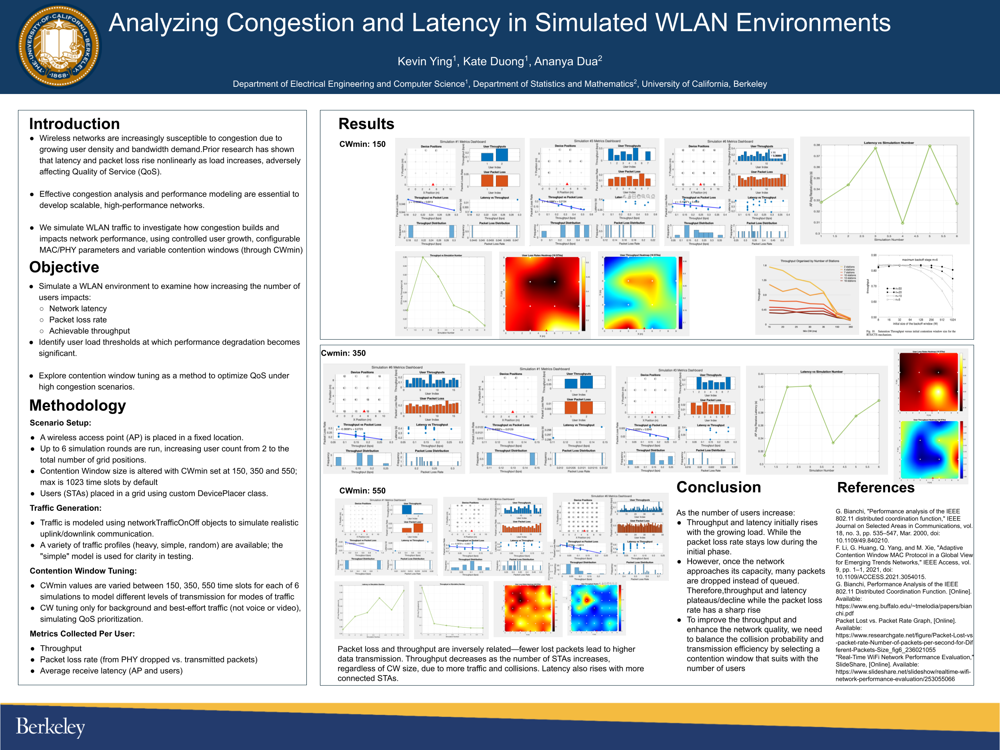
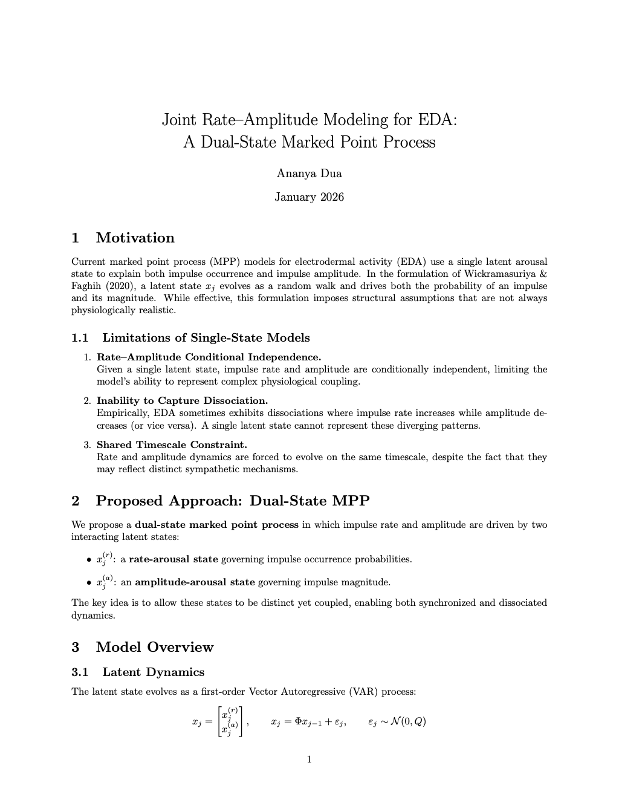
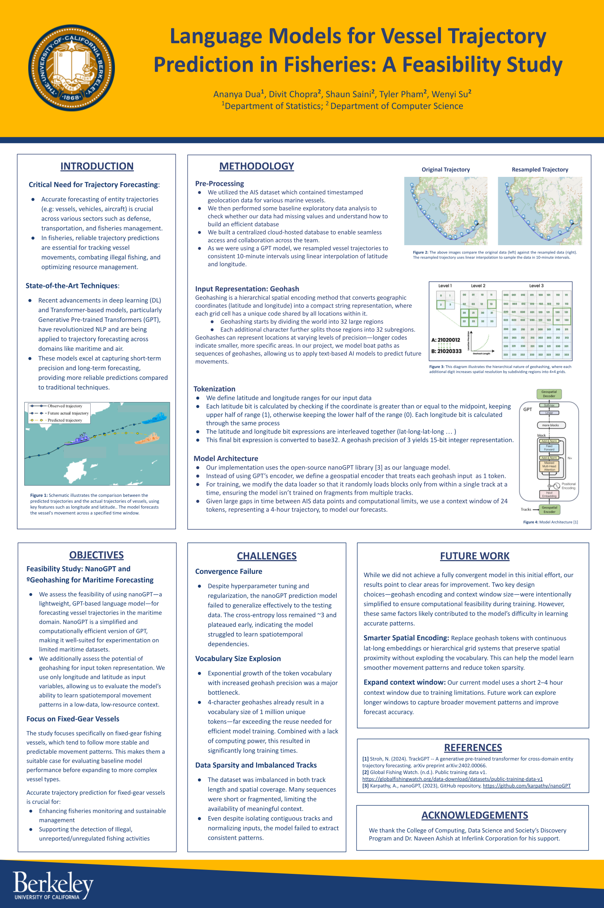
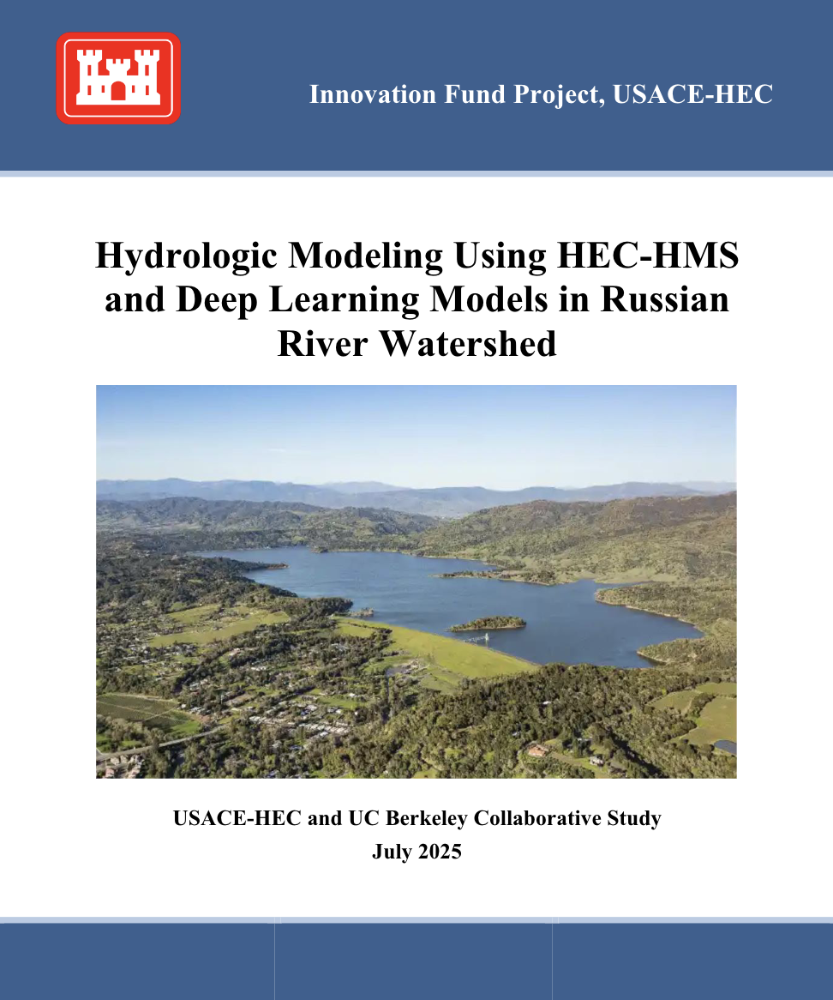

📡 Wireless Congestion Simulation and QoS Analysis
End-to-end WLAN simulation environment in MATLAB + Simulink that models multi-user traffic over IEEE 802.11.
Stress tests access strategies and measures p50 and p95 latency, throughput, packet loss across load regimes.
Proposed CSMA/CA tuning strategies to stabilize QoS under congestion.
- Built a custom DevicePlacer-based grid setup to scale STA counts across six WLAN simulations with fixed AP placement
- Automated networkTrafficOnOff uplink/downlink traffic profiles and CWmin sweeps at 150, 350, and 550 time slots
- Instrumented per-user throughput, PHY drop-based packet loss, and AP/STA latency metrics to identify congestion thresholds

🧠 Contactless HR Prediction with Copula Models
First-author IEEE EMBC '25 paper on predicting overnight heart-rate trajectories from triaxial accelerometry using
a nonparametric copula with Tll2nn local log-quadratic likelihood estimation. Presented at UCSF CPH Frontiers '25.
- Engineered a biosignal pipeline with sleep-stage filtering, PCA motion features, outlier removal, and smoothing
- Implemented subject-specific empirical copula prediction from accelerometer-only inputs using rank normalization, conditional ECDFs, and inverse marginals
- Built evaluation tooling for Spearman rho, mean directional accuracy, log-likelihood, baseline comparisons, and contour-based model diagnostics

⚡ Dual-State Marked Point Process for EDA
Developed a continuous-time probabilistic model for electrodermal activity that separates
latent impulse rate and amplitude dynamics into coupled physiological states.
Extended classical marked point process approaches with Log-Normal marks,
Inverse Gaussian inter-arrival modeling, and nonlinear state-space inference.
- Implemented Newton-Raphson EKF + RTS smoothing for latent-state estimation
- Designed an augmented-state EKF for joint timing and amplitude inference
- EM-based learning with stability-constrained continuous-time dynamics

🫀 Neural Temporal Point Process for Ectopy
Pending IEEE TBME journal publication on neural temporal point process modeling for ectopic heartbeat detection from irregular
beat-to-beat interval streams. Extended Barbieri’s inverse Gaussian heartbeat model with GRU-conditioned mixture likelihoods,
multi-hypothesis beat inference, and Fenton-Wilkinson calibration; presented at UCSF AI Day '26.
- Built an end-to-end sequence modeling pipeline for heartbeat interval preprocessing, temporal windowing, batched training, and reproducible evaluation
- Implemented probabilistic inference over extra, missed, misplaced, and resetting beat hypotheses to score candidate ectopy events under uncertainty
- Developed threshold-sweep, cross-validation, and diagnostic visualization tooling to tune false-alarm control on noisy physiological signals

🛰️ AIS Vessel Trajectory Forecasting with NanoGPT
Feasibility study applying language-model tooling to fixed-gear fishing vessel trajectory forecasting from timestamped AIS geolocation data.
Built a geohash-based tokenization and nanoGPT training pipeline to model vessel movement as discrete spatiotemporal sequences under limited compute.
- Implemented AIS preprocessing with missing-data analysis, trajectory resampling, and centralized cloud-hosted data access for team workflows
- Designed a custom geospatial tokenizer that converts latitude/longitude tracks into base32 geohash tokens with tunable spatial precision
- Modified nanoGPT with a geospatial encoder and track-aware data loader that batches contiguous trajectory windows for next-token forecasting experiments

🌊 Physics-Informed LSTM for Basin Hydrology
Physics-informed hybrid LSTM for streamflow and snowmelt forecasting across
California basins, developed in collaboration with USACE and UC Berkeley's ESDL.
Extended NeuralHydrology's PyTorch framework with custom architectures and
distributed training on Savio HPC to improve out-of-sample generalizability
under non-stationary climate conditions.
- Built a YAML-driven experiment runner for distributed Savio jobs with ipyparallel grid search, checkpointing, and resumable hyperparameter sweeps across LSTM depth, hidden size, and dropout configurations
- Implemented rolling NSE validation, early stopping, and out-of-basin transfer evaluation to benchmark generalizability across watersheds with sparse observational data
- Designed feature-ablation pipelines to quantify predictive lift from physics-informed inputs (infiltration, ET, saturation excess) over purely data-driven baselines

🧭 Student Voter Identification and Outreach Analytics
Built a campaign analytics and field-operations data system for a college-heavy district, joining registrar records, VAN exports,
and public voter files with SQL, deterministic entity resolution, and fuzzy matching. Produced Tableau and ArcGIS dashboards for student-segment outreach.
- Designed a Postgres-backed ingestion workflow that converted quota-limited PDF exports into normalized relational tables
- Implemented deduplication and conflict resolution across inconsistent voter records
- Generated geospatial layers and outreach lists for precinct-level field operations
🌐 Impact Evaluations in Education and Housing
Difference-in-differences for a youth chess intervention in rural Kenya, plus spatially-aware analysis of Brazil’s
Minha Casa, Minha Vida housing program using geolocation boundaries for pre and post comparisons.
- Built reproducible panel-data pipelines with geospatial joins, unit fixed effects, and clustered standard errors
- Automated event-study plots, placebo tests, and robustness checks for causal-inference workflows
- Packaged codebooks and analysis outputs for nontechnical policy partners to audit and reuse
📊 California Child Welfare Indicators Project
Research engineering for CDSS with automated ingestion and visualization of county-level child welfare outcomes.
Focus on traceable transformations and consistent metric definitions across time.
- Automated county-level metric ingestion and dashboard refreshes for safety, placement, and permanency indicators
- Implemented data quality checks, audit logs, and validation assertions to catch inconsistent longitudinal records